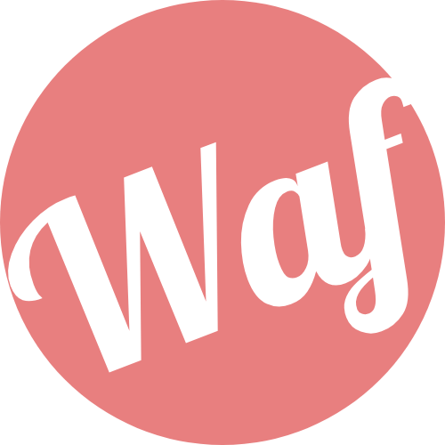

SIGNAGE
Démarrage…
Écran
Accueil
5
Lancement automatique de l'affichage…
▶ Lancer maintenant
Changer d'écran
Bienvenue
Configurer cet écran
Choisis comment relier ce boîtier à WAF Signage.
#
Nouvel écran
Le code d'association s'affiche : saisis-le dans l'admin,
Écrans → Associer un écran
.
▦
Écran existant
Reprendre un écran déjà créé (Accueil, Salle de cours…).
Démarrage automatique
Lanceur par défaut
Mises à jour auto
Écran existant
Quel écran est-ce ?
← Retour
C'est prêt
Accueil
L'affichage démarre…
Hors connexion
On se reconnecte…
Pas d'accès au serveur pour l'instant. Nouvelle tentative dans
10
s — l'affichage reprendra tout seul.
Réessayer
Changer d'écran
Paramètres Android
Menu
Accueil
▶ Reprendre l'affichage
Recharger
Changer d'écran
Démarrage automatique
Lanceur par défaut
Mises à jour auto
Rechercher une mise à jour
Paramètres Android
SIGNAGE